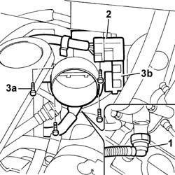
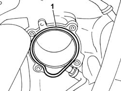

1056B14 THROTTLE CASE - R + R
- Path
- Procedures > 10 ENGINE > 1056 PETROL INJECTION SYSTEM > 1056B MULTI-POINT INJECTION SYSTEM (MPI) > 1056B14 THROTTLE CASE - R + R
- Kind
- repair procedure (removal / refitting; the operation number is the code)
- Applies to
- engines: 3.0 24V V6; all production periods
- Interactive page
- https://sloeber94.github.io/elrnDB-fUlss/en/#/179007016
Applies to: engines: 3.0 24V V6; all production periods
 Removing
Removing
 Refitting
Refitting- Disconnect the negative battery terminal.
Description | Connector | |
|---|---|---|
. | Battery | A001B |
Op. 5010B18 CLIMATE CONTROL UNIT AIR INTAKE - R.R.
Op. 1048A47 SLEEVE FROM RIGID PIPE TO THROTTLE BODY - R R
1. Disconnect the engine oil vapour recovery pipe from the throttle casing.
2. Release the wiring from the retaining clip and disconnect the electrical connection from the throttle casing actuator.
Description | Connector | |
|---|---|---|
2 | Integrated throttle casing actuator | N075 |
3. Undo the fixing bolts (3a) and remove the throttle casing (3b).

Applies to: engines: 3.0 24V V6; all production periods
Refitting
Removing1. Remove the gasket and replace it.

Applies to: engines: 3.0 24V V6; all production periods
- Position the throttle casing and tighten the fixing bolts to the recommended torque.
 | Value - daNm | Fastening | Component | Ø |
|---|---|---|---|---|
. | 1.0 | Bolts | THROTTLE CASING - R.R. | - |
- Connect the electrical connection to the throttle casing actuator and secure the wiring to the retaining clip
Description | Connector | |
|---|---|---|
. | Integrated throttle casing actuator | N075 |
- Connect the engine oil vapour recovery pipe.
Op. 1048A47 SLEEVE FROM RIGID PIPE TO THROTTLE BODY - R R
Op. 5010B18 CLIMATE CONTROL UNIT AIR INTAKE - R.R.
- Connect the negative battery terminal.
Description | Connector | |
|---|---|---|
. | Battery | A001B |